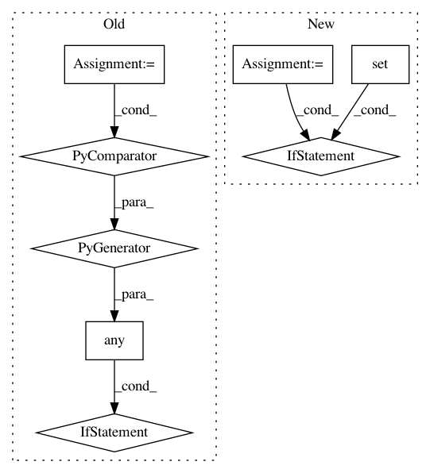

0e6804ca93a4f76300134a126d5942114b71901c,src/pyscenic/cli/pyscenic.py,,prune_targets_command,#Any#,137
Before Change
// https://stackoverflow.com/questions/27743711/can-i-speedup-yaml
// The alternative for which was opted in the end is binary pickling.
//TODO: Support loom!
if any(args.module_fname.name.endswith(ext) for ext in FILE_EXTENSION2SEPARATOR.keys()):
LOGGER.info("Creating modules.")
modules = _df2modules(args)
else:
LOGGER.info("Loading modules.")
//TODO: Support GMT
modules = _load_modules(args.module_fname.name)
if len(modules) == 0:
LOGGER.error("Not a single module loaded")
sys.exit(1)
After Change
// https://stackoverflow.com/questions/27743711/can-i-speedup-yaml
// The alternative for which was opted in the end is binary pickling.
extension = os.path.splitext(args.module_fname.name)[1].lower()
if extension in {".csv", ".tsv"}:
LOGGER.info("Creating modules.")
modules = adjacencies2modules(args.module_fname.name)
else:
LOGGER.info("Loading modules.")
try:
modules = load_modules(args.module_fname.name)
except ValueError as e:
LOGGER.error(e)
sys.exit(1)
if len(modules) == 0:
LOGGER.error("Not a single module loaded")
sys.exit(1)
In pattern: SUPERPATTERN
Frequency: 3
Non-data size: 8
Instances
Project Name: aertslab/pySCENIC
Commit Name: 0e6804ca93a4f76300134a126d5942114b71901c
Time: 2018-12-14
Author: vandesande.bram@gmail.com
File Name: src/pyscenic/cli/pyscenic.py
Class Name:
Method Name: prune_targets_command
Project Name: mne-tools/mne-python
Commit Name: b1dfd53f4c017b5b0e1e51af1d98d38e318c3676
Time: 2020-07-13
Author: richard.hoechenberger@gmail.com
File Name: mne/io/proj.py
Class Name: ProjMixin
Method Name: del_proj
Project Name: dgasmith/opt_einsum
Commit Name: 802a991087c8ba2620e2f98aa709af8f530f8b93
Time: 2018-03-22
Author: john.gray.14@ucl.ac.uk
File Name: opt_einsum/blas.py
Class Name:
Method Name: can_blas